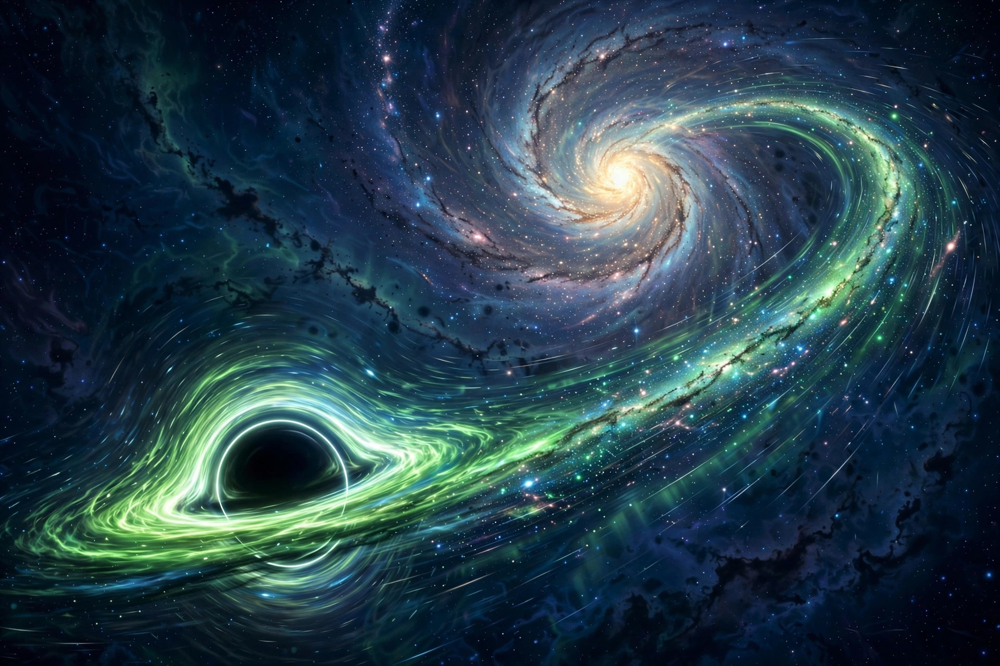

October 23, 2026
A Decade-Old Prediction Just Passed a 100,000-Quasar Test — Black Holes Can Be Kicked Out of Their Galaxies

Illustration: The Discovery Wire (generated artwork for this story)
A Decade-Old Prediction Just Passed a 100,000-Quasar Test — Black Holes Can Be Kicked Out of Their Galaxies
The universe can kick a billion-sun black hole out of its own galaxy. And a prediction from ten years ago just passed a 100,000-quasar test.
At the center of every large galaxy sits a supermassive black hole, millions or billions of times the Sun's mass. When two galaxies merge, their black holes spiral together, form a binary, and merge — releasing an enormous burst of gravitational waves. If those waves shoot out unevenly, the newborn black hole gets a kick, like the recoil of a gun when a bullet is fired, that can hurl it away at several million kilometers per hour.
It doesn't simply vanish. If the kick isn't strong enough to escape the galaxy entirely, gravity pulls it back — and the black hole swings through the galactic center again and again, like a pendulum. Just as a pendulum moves fastest at the lowest point of its swing, the black hole moves fastest when passing through the galaxy's center.
The fingerprint, predicted in 2016
In 2016, Péter Raffai, Zoltán Haiman, and Zsolt Frei used computer models to ask what a recoiling black hole would look like across a big catalog of quasars — the extremely bright, active galactic nuclei that mark feeding supermassive black holes. Their conclusion: velocity and dust should be linked. A black hole moves fastest at the galactic center, where dust is also thickest, so quasars with faster-moving black holes should, on average, be more dust-obscured — redder.
They noted at the time that the relationship could be tested with real data from large quasar catalogs. It took a decade.
100,000 quasars, one pattern
The new study — led by Bence Bécsy, who graduated from ELTE and now works at the University of Birmingham — did exactly that test. The team analyzed approximately 100,000 quasars from the Sloan Digital Sky Survey's quasar catalog, selecting objects with sufficiently high-quality data, and measured two things for each: the black hole's velocity (from tiny shifts between light from gas near the black hole and gas farther away, like an ambulance siren changing pitch) and the quasar's redness (a proxy for dust obscuration, like a setting sun glowing red through thick atmosphere).
The decade-old prediction emerged from the data. Quasars with faster-moving black holes are, on average, redder — more dust-obscured. The sharpest contrast shows up among the dustiest quasars: heavily obscured objects are three times more common among the fastest-moving black holes than among the slowest.
"This is the first observational test using a large sample of a prediction formulated at ELTE 10 years ago," the researchers note. Crucially, when they ran the same analysis on light from gas clouds that do not follow the black hole's motion, the correlation disappeared — a strong sign the signal is tied to the black hole itself.
The team is careful: this is statistical evidence for a population, not a confirmed kick in any single object, and other processes can't be completely ruled out. If the interpretation is right, the strength of the signal suggests two black holes merged relatively recently in roughly half of the quasars studied.
Why it matters for the future
The findings land directly in the preparations for ESA's LISA space observatory — three spacecraft flying in formation 2.5 million kilometers apart, planned for launch in 2035, built to detect gravitational waves from supermassive black hole mergers. Those mergers are precisely the events whose afterglow this study has now found in quasar light. If the signal really comes from kicked black holes, it tells astronomers roughly how common these mergers are — and how many of them LISA should expect to hear.
As Professor Frei put it: "We put this idea forward at ELTE 10 years ago, and now we have tested it ourselves, led by Bécsy, who graduated from our university. Few research groups are fortunate enough to maintain this kind of continuity."
Publication details: Bence Bécsy et al., Statistical evidence for massive black hole recoils in active galactic nuclei, Monthly Notices of the Royal Astronomical Society (2026). DOI: 10.1093/mnras/stag1367
Sources: Phys.org (Oct 22, 2026); Eötvös Loránd University press coverage; Universe Magazine; Scienmag.
Source: Phys.org — read the original report
← Back to latest stories